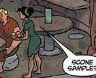

- Bean 1
- Early morning...
- ...but can continue it as a 'second breakfast'
- High content
- Little or no meta.
- Start unplugged, then offline
Bean 2
- Long term planning.
- Internet accessing.
- No coding.
- All online.
- Leads into chores, errands, exercise (changes each day.
- Bean 3

- Offline.
- Try for two hours but 1 hour is the real need.
- Start by five minutes of to-do list but move right into...
- Terminals, coding, practice,
- Unplugged drill with pencil, highlighter, flashcard, reading okay.